Circular Reference
Direct Circular Reference | Indirect Circular Reference | Find Circular References
A circular reference in Excel occurs when a formula directly or indirectly refers to its own cell. This is not possible.
Direct Circular Reference
Let's start simple. A direct circular reference in Excel occurs when a formula directly refers to its own cell.
1. For example, the formula in cell A3 below directly refers to its own cell (A3). This is not possible.
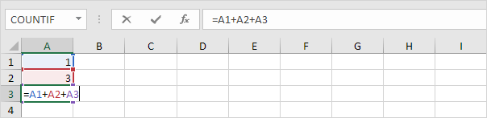
2. Press Enter. The circular reference error message appears.
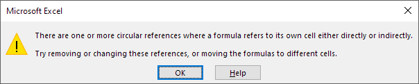
3. Click OK. Excel returns a 0.
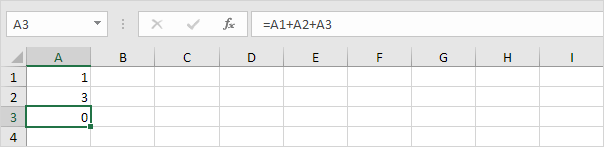
Indirect Circular Reference
An indirect circular reference in Excel occurs when a formula indirectly refers to its own cell. Let's look at a simple example.
1. For example, cell D2 below contains the value 25.
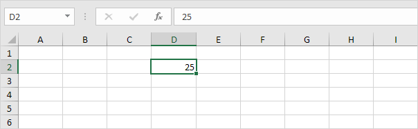
2. Cell F4 refers to cell D2.
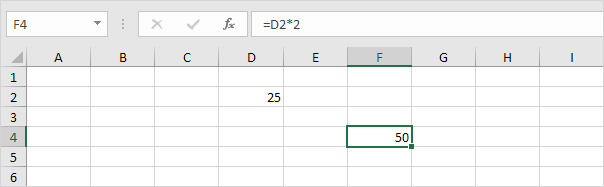
3. Cell C5 refers to cell F4.
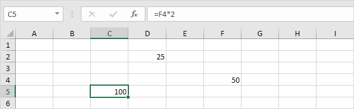
4. So far, everything's OK. Now replace the value 25 in cell D2 with the formula shown below.
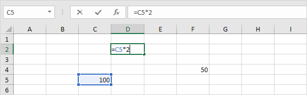
5. Press Enter. The circular reference error message appears.
6. Click OK. Excel returns a 0.
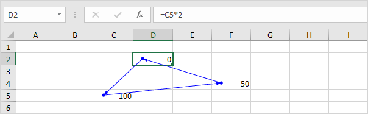
7. On the Formulas tab, in the Formula Auditing group, click Show Formulas.
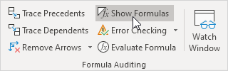
8. Cell D2 refers to cell C5. Cell C5 refers to cell F4. Cell F4 refers back to cell D2.
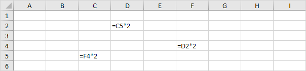
Conclusion: the formula in cell D2 indirectly refers to its own cell (D2). This is not possible. The formulas in cell C5 and cell F4 also refer back to their own cell (it's a circle).
Find Circular References
To find circular references in Excel, in the Formula Auditing group, click the down arrow next to Error Checking and click Cell References.
1. Our sheet contains 2 circular references. 1 direct circular reference (A3) and 1 indirect circular reference (D2, C5 and F4).
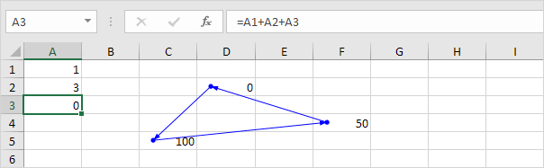
2. On the Formulas tab, in the Formula Auditing group, click the down arrow next to Error Checking.
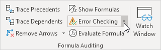
3. Click Circular References. Excel shows the cell address of one circular reference.
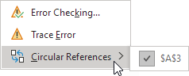
4. You can also look at the status bar. This is much easier.
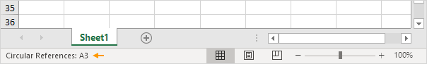
5. Fix this circular reference.
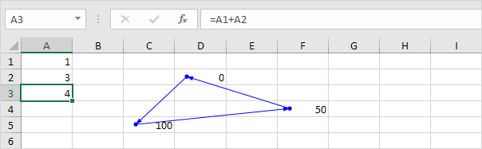
To find more circular references, repeat these steps.
6. On the Formulas tab, in the Formula Auditing group, click the down arrow next to Error Checking.
7. Click Circular References. Excel shows the cell addresses of the indirect circular reference.
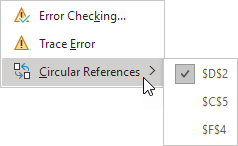
8. The status bar only displays a single cell address.
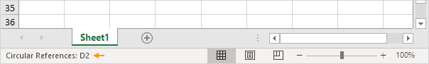
Note: fix this circular reference by replacing one of the formulas with a value. As a result, the warning in the status bar will disappear.